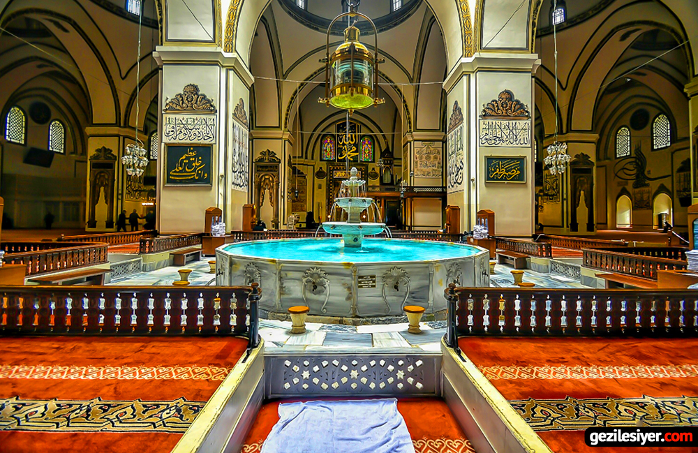

Tarih & Hikaye
Ulu Cami, Sultan Yıldırım Bayezid tarafından 1399 yılında, Niğbolu Savaşı'nın ardından Allah'a şükran borcu olarak yaptırılmıştır. Osmanlı mimarisinin en önemli örneklerinden biri sayılan bu dev yapı, Bursa'nın hem tarihinin hem de kimliğinin ayrılmaz parçasıdır.
İçeride bulunan havuzun etrafındaki mermer sütunlar ve kubbelerin altındaki Kur'an yazıları camiyi ziyaret edenleri derinden etkiler. İçindeki şadırvan, o dönemin mimari anlayışını yansıtan nadir örneklerden biridir.
Her geçen yüzyılda Bursa'nın simgesi haline gelen Ulu Cami, bugün milyonlarca yerli ve yabancı turist tarafından ziyaret edilmektedir.

Mimari Özellikler
Cami, 5×4 düzeninde toplam 20 kubbeyle örtülüdür. Her kubbe farklı boyut ve yüksekliktedir.
İç mekânı taşıyan 12 büyük mermer sütun, yapının ihtişamını pekiştirmektedir.
Kubbenin ortasındaki açıklıktan ışık alan iç avlu ve şadırvan, dönemin özgün tasarım anlayışını yansıtır.
Türk hat sanatının en güzel örnekleri camiyi süslemektedir. 192 ayrı hat yazısı yer almaktadır.
Farklı dönemlerde eklenen iki minare, camiyi her açıdan görünür kılmaktadır.
Yaklaşık 5600 m² alanda inşa edilen cami, 5.000 kişiyi aynı anda ağırlayabilmektedir.
Temel Bilgiler
| Yaptıran | Sultan I. Yıldırım Bayezid |
| İnşa Tarihi | 1396–1399 |
| Mimari Stil | Erken Osmanlı Mimarisi (Çok Kubbeli Tip) |
| Konum | Osmangazi, Bursa, Türkiye |
| Kapasite | ~5.000 kişi |
| UNESCO | Bursa ve Cumalıkızık kapsamında Dünya Mirası Listesi'nde (2014) |
💬 Benim Perspektifimden
Bursa'ya taşındıktan sonra Ulu Cami'ye gittiğimde içerideki devasa boyut ve sessizlik beni etkiledi. 600 yıl önceki insanların bu yapıyı hangi araçlarla inşa ettiğini düşününce ne kadar gelişmiş olduklarını görüyorsunuz. Biz mühendis adayları olarak bu tür yapıları incelemek aslında harika bir ilham kaynağı.